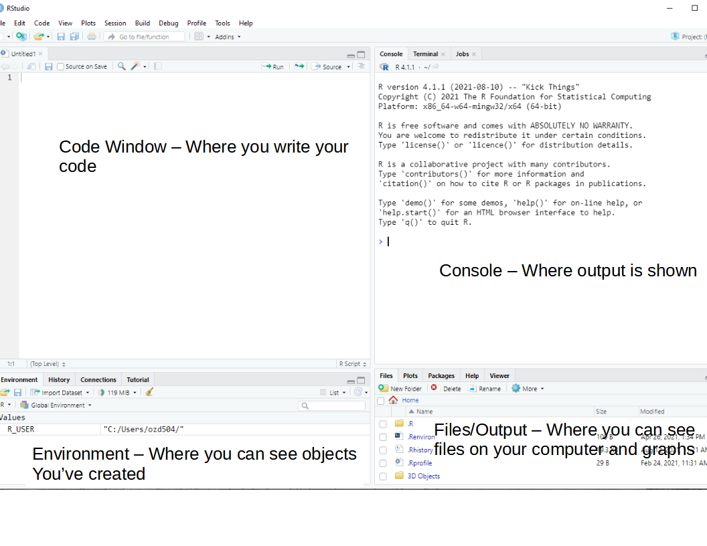

haven::read_sas()R Bootcamp for Graduate Students - Day 1
R Bootcamp for Incoming Graduate Students
When: August 16, 6pm to 8pm
Where: Zoom Link Here
What we will do:
This will be a short introduction to the R statistical programming language. This is intended to ease the anxiety over using R for your statistics courses. We realize that many incoming students have not used R or any programming language.
What you’ll get from this:
This bootcamp will get you set up on your personal computer using R. This includes installing R, Rstudio and any other associated software, and getting you oriented with where things are.
Agenda
| Day | topic |
|---|---|
| Tuesday | Introduction/What is R? |
| Tuesday | Installing R and Rstudio on your computer |
| Tuesday | Introduction to Rstudio |
| Tuesday | Break |
| Tuesday | Reading common files into R |
| Tuesday | Using R to summarize data |
| Tuesday | Q&A |
| Wednesday | Q&A |
| Wednesday | Basic ggplot |
| Wednesday | Break |
| Wednesday | Basic dplyr |
| Wednesday | R file types |
| Wednesday | Common packages |
| Wednesday | Q&A |
Day 1
What is R?
R was first implemented in the early 1990’s by Robert Gentleman and Ross Ihaka, both faculty members at the University of Auckland. It is an open source software system that specializes in statistical analysis and graphics. R is its own programming language and the R ecosystem includes over 18,000 user-contributed additions to the software, known as packages.
I’ve used R for twenty years. I was also trained in SPSS and SAS along the way, by various mentors. Some tried to get me to learn more general purpose languages like Delphi (of all things) or Perl, or Basic, and I’ve been chastised for not knowing the depths of Python, but R presents a nimble and rigorous platform to do demography. My top three reasons for teaching and using R are:
- It’s free - This is important, because, why should we pass along more costs to people, especially our students? This also make R code accessible to people, worldwide.
- It’s the hotbed of methodological development. The R ecosystem has thousands of packages that represent the bleeding edge of data analysis, visualization and data science. This makes R attractive because it can pivot quickly to adopt new methods, which often lag in their development in other environments.
- It has a supportive community of users. While there are some debates over how friendly some R users are to new users, overall, after spending 20 years in the R community, I’ve personally assisted hundreds of users, and been personally helped by many others. The open source nature of R lends itself to sharing of ideas and collaboration between users.
Installing R and Rstudio on your computer
Steps:
- Install base R using the appropriate installer for your computer (Windows, Mac, Linux) If you already have an R version installed on your computer, it’s best to install the current version (4.2.1 as of this document)
- Install Rstudio, an Integrated Development Environment for R
- If you are a Windows user, install Rtools, which provides other tools for R to use on Windows systems.
Links:
Introduction to Rstudio
Rstudio is an open source Integrated Development Environment (IDE) for R. It is a much better interface for using R because it allows you to write code in multiple languages, navigate your computer’s files, and see your output in a very nice single place. The Rstudio IDE has several components that we will explore.

Code window/Source editor pane
This is where you write your R code. You can write R code in a few different file types (more on this later), but the basic one is an R script, with file extension .R
The code window allows you to write and execute your code one line at a time, or to run an entire script at once. I use this to develop new code and when I want to test if things work (a VERY common exercise when writing any code).
To run a single line of code, put your cursor on the line and hit Ctrl-Enter (on Mac CMD-Enter also does this)
To run multiple lines of code, highlight the lines you want to run and do the same thing
Console Pane
This is where most of your non-graphical output will be shown. Any numeric output will appear here, as well as any warnings or error messages. In R a warning doesn’t necessarily mean something went wrong, its just R’s polite way of telling you to pay attention.
An Error means something did go wrong. This is often because you left off a ) or a, sometimes because you misspelled something. I routinely spell
lengthaslenghtwhich causes R to print an error message. If you see an error, don’t worry, R will print some kind of message telling you what went wrong.R’s output is in plain text, although we can produce much prettier output using other output methods, and we’ll talk more about that later.
You can type commands or code into the console as well, and you’ll immediately get the result, versus if you write it in the Source/Code window, you have to run it to see the result. I will often work in the console when I want to get “fast” answers, meaning little checks that I will often do to see the value of something.
Environment or Workspace browser pane
The R environment is where any object you create is stored. In R, anything you read in or create with your code is called an object, and R is said to be an object oriented programming language.
Depending on the type of object something is, you may be able to click on the object in the environment and see more about it.
For instance if the object is a data frame, R will open it in a viewer where you can explore it like a spreadsheet, and sort and filter it as well.
Other objects may not do anything when you click on them.
There is also a useful History tab here that shows you recently executed lines of code from the console or the code pane.
Files/Output/Help pane
The files and output area is where you can interact with files on your local computer, such as data files or code files, or images that R can open.
This area also has a plots window that will display plots you create in R either via typing directly into the console or by running a line(s) of code from the source/code pane.
There is also a very valuable part of this pane that lets you access the help system in R. If you are either looking for something, or you just want to explore the functions, you can get access to all of this here.
Break
Reading common file types into R
Many of you have data or maybe R code you’ve written before that you want to open in R. Depending on the type of file there are many ways to do this. Using the Files pane is an easy way to get R to open existing files for you. This will use an appropriate R function to read in the file and load it into R’s workspace/environment.
Excel spreadsheets and their text equivalent Comma Separated Value (csv) files are able to be clicked on in the Files pane and will open directly into R. R will also import via the point and click method data files from SPSS (.sav) and Stata (.dta). Likewise R’s own native data sets (.rds or .rdata) files can also be clicked on directly in the files pane and loaded directly into the environment.
Some files, particularly data files produced by SAS require special functions to read into R. To read a SAS dataset (.sas7bdat) into R, use:
You can also read data directly from the internet, if it exists as a linkable file. For instance, if I wanted to read a data set that is a csv from a website, you can do:
prb = readr::read_csv(url("https://raw.githubusercontent.com/coreysparks/r_courses/master/2018_WPDS_Data_Table_FINAL.csv"))Rows: 210 Columns: 27
── Column specification ────────────────────────────────────────────────────────
Delimiter: ","
chr (3): continent, region, country
dbl (24): pop2018, cbr, cdr, rate_inc, netmig, projpop2030, projpop2050, imr...
ℹ Use `spec()` to retrieve the full column specification for this data.
ℹ Specify the column types or set `show_col_types = FALSE` to quiet this message.Which uses the url() function to tell R that you are providing a web link.
Summarizing data
One of the key elements of analyzing data is the initial descriptive analysis of it. In subsequent chapters, I will go into more depth about this process, but for now, I want to illustrate some simple but effective commands for summarizing data. R’s basic way of storing data is as a structure called a data frame, which you can think of as a table, much like a spreadsheet. Data frames can store any type of data but usually store numeric or character variable types. Depending on what kind of data are in a dataframe, R will summarize it differently. There are a few different ways to access a particular variable in a dataframe. The customary method is to use the $ operator. Here’s an example:
Dataframe summaries
The summary() function is very useful both in terms of producing numerical summaries of individual variables, but also shows summaries of entire dataframes. Its output differs based on the type of variable you give it, for character variables it does not return any summary.
For factor variables, it returns a frequency table, and for numeric variables, it returns the five number summary plus the mean.
summary(prb$region) Length Class Mode
210 character character summary(as.factor(prb$continent)) AFRICA ASIA EUROPE NORTHERN AMERICA
57 51 45 27
OCEANIA SOUTH AMERICA
17 13 summary(prb$tfr) Min. 1st Qu. Median Mean 3rd Qu. Max.
1.000 1.600 2.300 2.709 3.750 7.200 I find this function to be very useful when I’m initially exploring a data set, so I can easily see the min/max values of a variable.
There are many alternatives to this base function, including psych::describe(), Hmisc::describe(), and skimr::skim(), all of which produce summaries of dataframes or variables.
desc1 <- psych::describe(prb, fast = F)
print(desc1, short = T) vars n mean sd median trimmed mad min
continent* 1 210 2.69 1.50 2.0 2.54 1.48 1.0
region* 2 210 10.40 5.71 11.0 10.54 7.41 1.0
country* 3 210 105.50 60.77 105.5 105.50 77.84 1.0
pop2018 4 210 36.29 139.62 7.0 13.19 9.79 0.0
cbr 5 210 20.34 10.24 18.5 19.35 11.12 7.0
cdr 6 210 7.68 2.74 7.0 7.55 2.97 1.0
rate_inc 7 210 1.27 1.06 1.2 1.23 1.33 -0.7
netmig 8 210 0.31 6.85 0.0 -0.11 2.97 -21.0
projpop2030 9 210 40.81 149.97 7.9 15.50 11.19 0.0
projpop2050 10 210 46.91 157.42 9.1 19.06 12.97 0.0
imr 11 209 22.10 20.53 14.0 19.15 14.97 1.5
tfr 12 210 2.71 1.34 2.3 2.54 1.19 1.0
gnigdp 13 189 19804.30 21208.36 12880.0 16052.83 13728.88 710.0
pcturban 14 210 60.03 23.61 61.5 60.47 27.43 13.0
popdens 15 203 9413.00 74675.11 859.0 1294.87 769.47 52.0
pctwomcontra_all 16 167 51.27 21.48 55.0 52.13 25.20 4.0
pctwomcontra_mod 17 164 43.09 21.34 44.5 42.93 27.43 2.0
pctmalehiv 18 136 1.61 3.36 0.5 0.76 0.59 0.1
pctfemhiv 19 136 2.28 5.54 0.3 0.86 0.30 0.1
e0male 20 208 70.04 7.57 71.0 70.52 7.41 50.0
e0female 21 208 74.78 8.16 77.0 75.51 8.15 52.0
e65male 22 199 15.14 2.53 15.0 15.04 2.97 10.0
e65female 23 199 17.51 3.18 17.0 17.50 4.45 10.0
pctlt15_2018 24 210 27.51 10.59 25.5 26.98 12.60 12.0
pctlt15_2050 25 199 20.93 7.43 18.0 20.20 5.93 11.0
pct65p_2018 26 210 8.93 6.23 7.0 8.27 5.93 1.0
pct65p_2050 27 199 16.92 9.36 17.0 16.57 11.86 3.0
max range skew kurtosis se
continent* 6.0 5.0 0.63 -0.56 0.10
region* 19.0 18.0 -0.13 -1.29 0.39
country* 210.0 209.0 0.00 -1.22 4.19
pop2018 1393.8 1393.8 8.63 79.52 9.63
cbr 48.0 41.0 0.68 -0.62 0.71
cdr 16.0 15.0 0.40 0.04 0.19
rate_inc 3.8 4.5 0.24 -0.95 0.07
netmig 32.0 53.0 1.17 4.78 0.47
projpop2030 1532.3 1532.3 8.49 77.80 10.35
projpop2050 1680.1 1680.1 8.15 74.46 10.86
imr 85.0 83.5 1.07 0.09 1.42
tfr 7.2 6.2 1.00 0.13 0.09
gnigdp 128060.0 127350.0 1.90 4.40 1542.68
pcturban 100.0 87.0 -0.15 -1.03 1.63
popdens 1032235.0 1032183.0 12.81 170.84 5241.17
pctwomcontra_all 88.0 84.0 -0.35 -0.99 1.66
pctwomcontra_mod 84.0 82.0 0.01 -1.14 1.67
pctmalehiv 19.3 19.2 3.76 14.64 0.29
pctfemhiv 35.1 35.0 3.85 15.72 0.47
e0male 82.0 32.0 -0.54 -0.47 0.52
e0female 88.0 36.0 -0.74 -0.31 0.57
e65male 20.0 10.0 0.32 -1.10 0.18
e65female 24.0 14.0 0.07 -1.01 0.23
pctlt15_2018 50.0 38.0 0.34 -1.18 0.73
pctlt15_2050 43.0 32.0 0.80 -0.53 0.53
pct65p_2018 28.0 27.0 0.78 -0.62 0.43
pct65p_2050 36.0 33.0 0.20 -1.16 0.66desc3<-skimr::skim(prb)
desc3| Name | prb |
| Number of rows | 210 |
| Number of columns | 27 |
| _______________________ | |
| Column type frequency: | |
| character | 3 |
| numeric | 24 |
| ________________________ | |
| Group variables | None |
Variable type: character
| skim_variable | n_missing | complete_rate | min | max | empty | n_unique | whitespace |
|---|---|---|---|---|---|---|---|
| continent | 0 | 1 | 4 | 16 | 0 | 6 | 0 |
| region | 0 | 1 | 7 | 16 | 0 | 19 | 0 |
| country | 0 | 1 | 4 | 30 | 0 | 210 | 0 |
Variable type: numeric
| skim_variable | n_missing | complete_rate | mean | sd | p0 | p25 | p50 | p75 | p100 | hist |
|---|---|---|---|---|---|---|---|---|---|---|
| pop2018 | 0 | 1.00 | 36.29 | 139.62 | 0.0 | 1.30 | 7.0 | 25.43 | 1393.8 | ▇▁▁▁▁ |
| cbr | 0 | 1.00 | 20.34 | 10.24 | 7.0 | 11.00 | 18.5 | 28.00 | 48.0 | ▇▅▃▃▁ |
| cdr | 0 | 1.00 | 7.68 | 2.74 | 1.0 | 6.00 | 7.0 | 9.00 | 16.0 | ▂▇▆▂▁ |
| rate_inc | 0 | 1.00 | 1.27 | 1.06 | -0.7 | 0.30 | 1.2 | 2.20 | 3.8 | ▇▇▇▆▂ |
| netmig | 0 | 1.00 | 0.31 | 6.85 | -21.0 | -2.00 | 0.0 | 2.00 | 32.0 | ▁▇▃▁▁ |
| projpop2030 | 0 | 1.00 | 40.81 | 149.97 | 0.0 | 1.33 | 7.9 | 33.10 | 1532.3 | ▇▁▁▁▁ |
| projpop2050 | 0 | 1.00 | 46.91 | 157.42 | 0.0 | 1.42 | 9.1 | 40.95 | 1680.1 | ▇▁▁▁▁ |
| imr | 1 | 1.00 | 22.10 | 20.53 | 1.5 | 6.00 | 14.0 | 36.00 | 85.0 | ▇▂▂▁▁ |
| tfr | 0 | 1.00 | 2.71 | 1.34 | 1.0 | 1.60 | 2.3 | 3.75 | 7.2 | ▇▃▃▁▁ |
| gnigdp | 21 | 0.90 | 19804.30 | 21208.36 | 710.0 | 4490.00 | 12880.0 | 27400.00 | 128060.0 | ▇▂▁▁▁ |
| pcturban | 0 | 1.00 | 60.03 | 23.61 | 13.0 | 41.00 | 61.5 | 78.75 | 100.0 | ▅▆▇▇▆ |
| popdens | 7 | 0.97 | 9413.00 | 74675.11 | 52.0 | 423.00 | 859.0 | 2150.00 | 1032235.0 | ▇▁▁▁▁ |
| pctwomcontra_all | 43 | 0.80 | 51.27 | 21.48 | 4.0 | 33.50 | 55.0 | 67.50 | 88.0 | ▃▅▅▇▅ |
| pctwomcontra_mod | 46 | 0.78 | 43.09 | 21.34 | 2.0 | 24.00 | 44.5 | 60.00 | 84.0 | ▆▇▇▇▅ |
| pctmalehiv | 74 | 0.65 | 1.61 | 3.36 | 0.1 | 0.20 | 0.5 | 1.22 | 19.3 | ▇▁▁▁▁ |
| pctfemhiv | 74 | 0.65 | 2.28 | 5.54 | 0.1 | 0.10 | 0.3 | 1.60 | 35.1 | ▇▁▁▁▁ |
| e0male | 2 | 0.99 | 70.04 | 7.57 | 50.0 | 65.00 | 71.0 | 75.25 | 82.0 | ▂▃▅▇▆ |
| e0female | 2 | 0.99 | 74.78 | 8.16 | 52.0 | 69.00 | 77.0 | 80.25 | 88.0 | ▁▃▃▇▅ |
| e65male | 11 | 0.95 | 15.14 | 2.53 | 10.0 | 13.00 | 15.0 | 17.00 | 20.0 | ▃▇▅▅▃ |
| e65female | 11 | 0.95 | 17.51 | 3.18 | 10.0 | 15.00 | 17.0 | 20.00 | 24.0 | ▁▇▇▇▃ |
| pctlt15_2018 | 0 | 1.00 | 27.51 | 10.59 | 12.0 | 18.00 | 25.5 | 36.75 | 50.0 | ▇▆▅▅▃ |
| pctlt15_2050 | 11 | 0.95 | 20.93 | 7.43 | 11.0 | 15.00 | 18.0 | 27.00 | 43.0 | ▇▃▂▂▁ |
| pct65p_2018 | 0 | 1.00 | 8.93 | 6.23 | 1.0 | 4.00 | 7.0 | 14.00 | 28.0 | ▇▃▂▂▁ |
| pct65p_2050 | 11 | 0.95 | 16.92 | 9.36 | 3.0 | 8.00 | 17.0 | 24.50 | 36.0 | ▇▆▅▇▂ |
The summary() function, as well as the other three functions in other packages can be used on a single variable within a dataframe as well, or on a simple vector.
Frequency tables
A basic exploration of data, especially if your data have categorical or nominal variables, includes the extensive use of frequency tables. If you’re simply looking at the number of observations in each level of a categorical variable, or using frequency tables to aggregate data, they are some of the most useful basic statistical summaries around.
The basic function for constructing simple tables is table() in base R. More sophisticated table construction is allowed in xtabs().
Let’s have a look at some descriptive information about the data:
Frequency Table of # of Countries by Continent
table(prb$continent)
AFRICA ASIA EUROPE NORTHERN AMERICA
57 51 45 27
OCEANIA SOUTH AMERICA
17 13 Measures of central tendency
We can use graphical methods to describe what data ‘look like’ in a visual sense, but graphical methods are rarely useful for comparative purposes. In order to make comparisons, you need to rely on a numerical summary of data vs. a graphical one.
Numerical measures tell us a lot about the form of a distribution without resorting to graphical methods. The first kind of summary statistics we will see are those related to the measure of central tendency. Measures of central tendency tell us about the central part of the distribution.
Mean and median
Here is an example from the PRB data.
mean(prb$tfr)[1] 2.708571Whoops! What happened? This means that R can’t calculate the mean because there’s a missing value, which we saw before. We can tell R to automatically remove missing values by:
mean(prb$tfr, na.rm = T)[1] 2.708571Which works without an error.
Many R functions will fail, or do listwise deletion of observations when NAs are present, so it’s best to look at the documentation for the function you’re wanting to use to see what it’s default na action is.
The mean() function defaults to na.rm=FALSE, which indicates that it does not remove missing values by default.
We can also calculate the median TFR
median(prb$tfr, na.rm = T)[1] 2.3Measures of variation
One typical set of descriptive statistics that is very frequently used is the so-called five number summary and it consists of : the Minimum, lower quartile, median, upper quartile and maximum values.
This is often useful if the data are not symmetric or skewed. This is what you get when you use the fivenum() function, or we can include the mean if we use the summary() function.
fivenum(prb$tfr)[1] 1.0 1.6 2.3 3.8 7.2summary(prb$tfr) Min. 1st Qu. Median Mean 3rd Qu. Max.
1.000 1.600 2.300 2.709 3.750 7.200 The above sections have shown some basic ways to summarize data in R, along with many handy functions that are pervasive in my own general work flow.
Is this everything R will do, No!
Are these the only way to do things in R? Never!
I’m constantly marveled at how many new functions I see my students using in their own work and this reminds me how much of the R ecosystem I have yet to explore, even after twenty-plus years of using it.